Shipped product · iOS, Android, web
Test and tag, end to end.
An offline-first phone app the technician carries round a site, an admin console the office runs the business from, and one API behind both. Every tag, failure and photo ends up in a report a client can rely on.
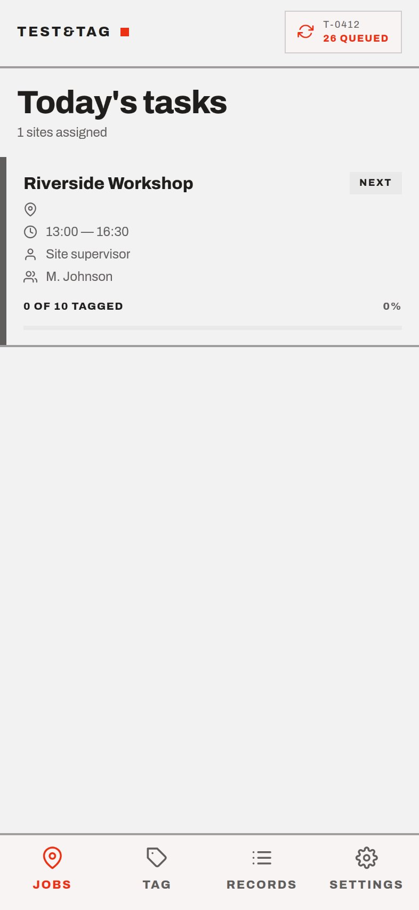
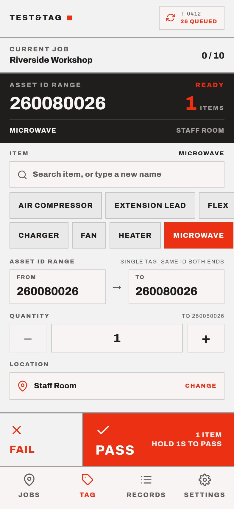
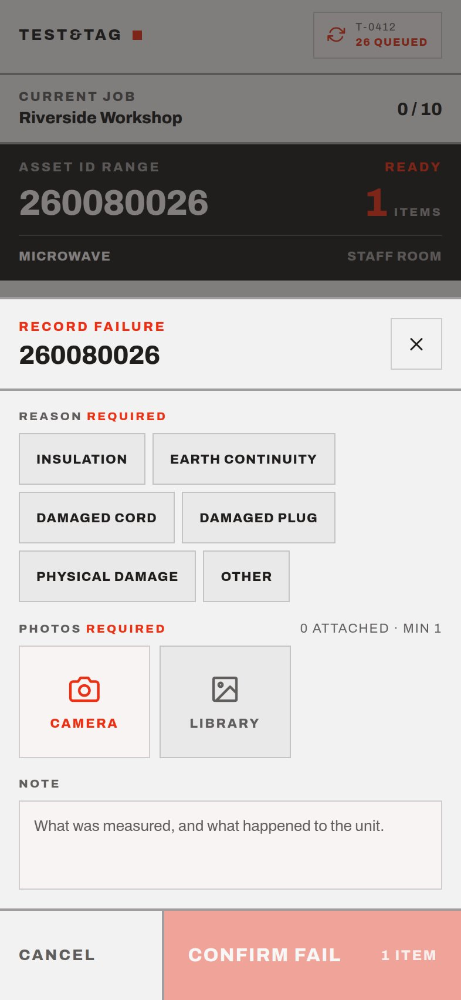
- Apps
- 3 Phone, console, API
- Shared domain package
- 1 So they can’t disagree
- API endpoints
- 54 Fastify + Prisma
- Tests passing
- 190 Domain, app and a full workflow run
01 — The field app
Built for a technician with a tester in one hand.
Expo and React Native, one codebase for iOS, Android and the web. Big targets, hold-to-confirm on anything that commits, and a dark instrument readout that stays legible in a plant room.
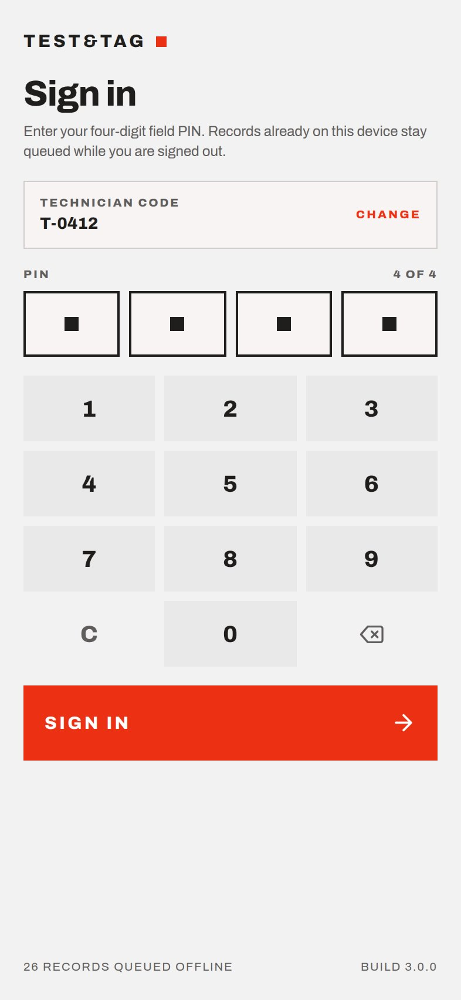
01Sign in with a PIN
Technician code and four digits. Anything already on the device stays queued while signed out.
02Today’s sites
Only published jobs reach the phone — publishing is a separate, deliberate act in the console.
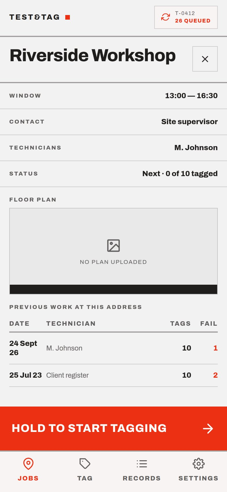
03The job brief
Window, contact, floor plan and the previous work at this address, before a single tag is written.
04Tag in ranges
A barcode range, an item, a room. Ten identical leads are one action, not ten.
05Fail with evidence
A reason and a photo are required, so every failure in a report can be shown, not just stated.
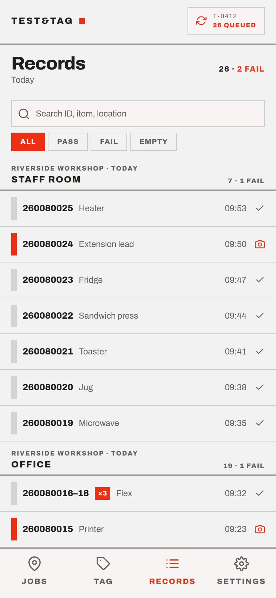
06Records by room
The day grouped by area, runs collapsed, failures and photos marked at a glance.
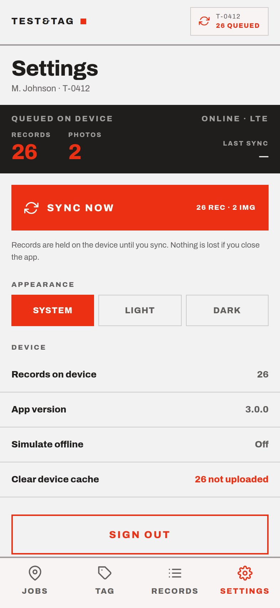
07Sync when there’s signal
Records and photos wait on the device. Syncing twice is harmless; nothing is lost if the app closes.
02 — The office console
The business, run from one screen.
Vite and React, installable as a PWA. Schedule and publish jobs, import client registers, watch records arrive, and issue reports that are archived rather than regenerated.
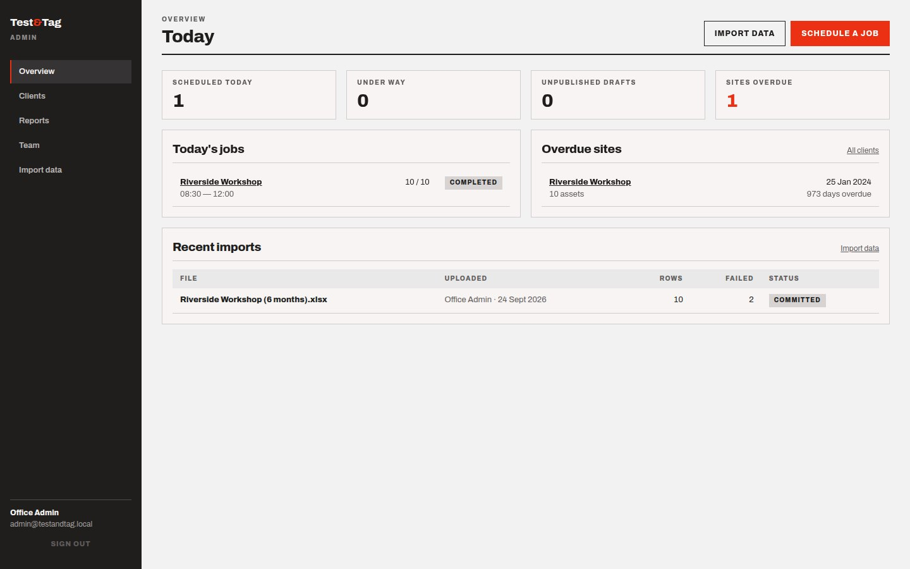
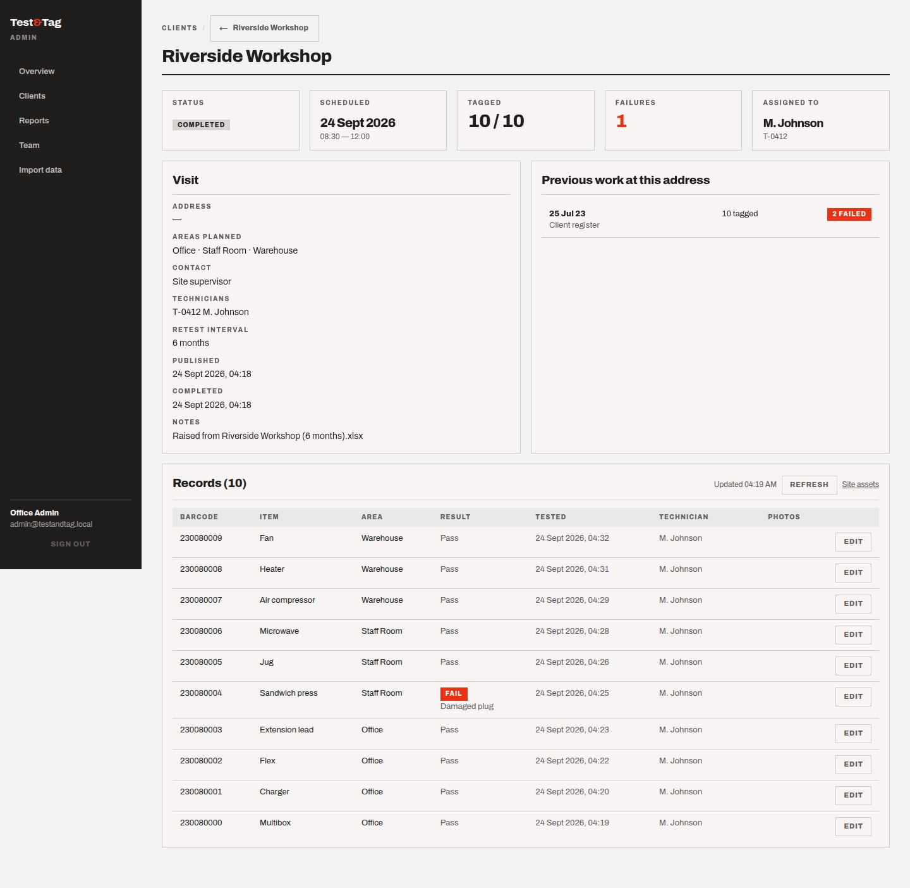
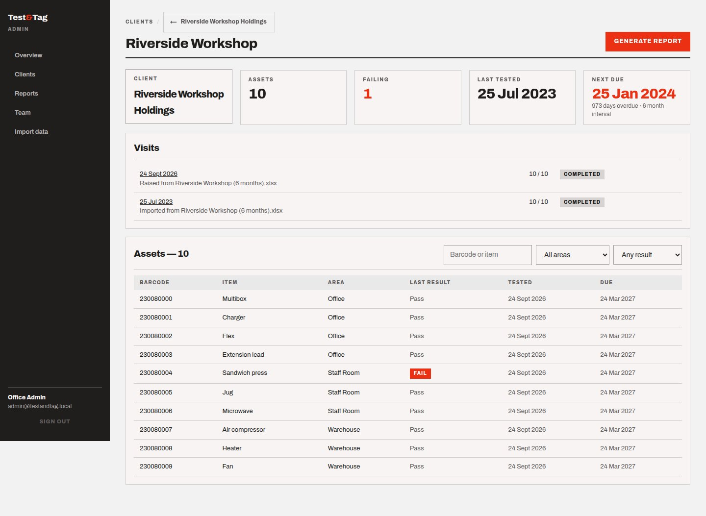
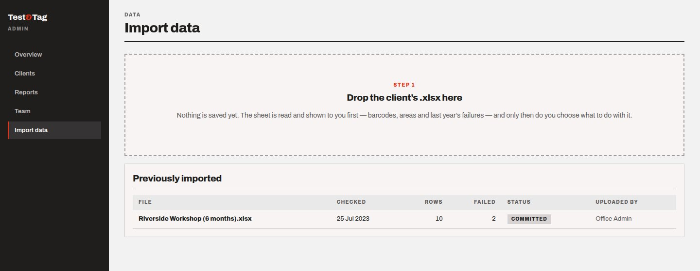
03 — Registers as they really are
A parser built for the spreadsheet clients actually send.
Client registers are kept by hand. Reading them literally loses most of the information, so the import reads them the way a person would — and one sheet becomes the asset register, the last inspection and the next visit at once.
- Header blockThe table starts several rows down, under a heading block.
- Blank means “same”The Location column is only filled in when the area changes; a blank means the room above.
- No pass/fail columnThe verdict is prose in Comments — “Fail - Cracked case” — and a blank comment means it passed.
- Merged headingsHeadings are merged across the table, so a naive reader sees the site name once per column.
- Two dates, one line“Checked date … Recheck date …” sits in a single cell.
04 — How it’s built
One monorepo, one domain, three front doors.
ID-range expansion, run collapsing, area grouping, retest arithmetic and the Excel parser all live in one shared package — down to the colour palette — so the phone, the console and the server cannot disagree about what a record means.
- 190tests passing, including one that drives the whole business through HTTP — sign in, import, publish, sync twice, report.
- 1schema on two databases, so nobody needs a database server to work on it.
- 3platforms from one React Native codebase: iOS, Android and the web.